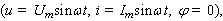
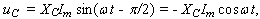
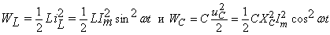
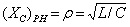
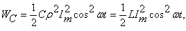
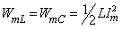

2.7.2.11. Энергетические процессы при резонансе напряжений
|
Для режима резонанса напряжений  напряжение на ёмкостном элементе контура  а энергия WL, запасаемая в магнитном поле индуктивной катушки, и энергия WC, запасаемая в электрическом поле конденсатора: . После подстановки в выражение энергии WC ёмкостного сопротивления   замечаем, что амплитуды колебаний магнитной и электрической энергии в реактивных элементах контура одинаковы: , а сумма магнитной и электрической энергии в контуре постоянна и равна
Итак, при резонансе напряжений общая накопленная
энергия в контуре остаётся неизменной; при этом магнитная энергия WL изменяется
во времени по закону квадрата синуса, а электрическая энергия WC -
по закону квадрата косинуса (рис. 2.78). Это означает, что в контуре
происходит обмен энергией между элементами L и C без
участия в этом процессе источника e(t),
для которого контур - чисто резистивная нагрузка.
| |||||